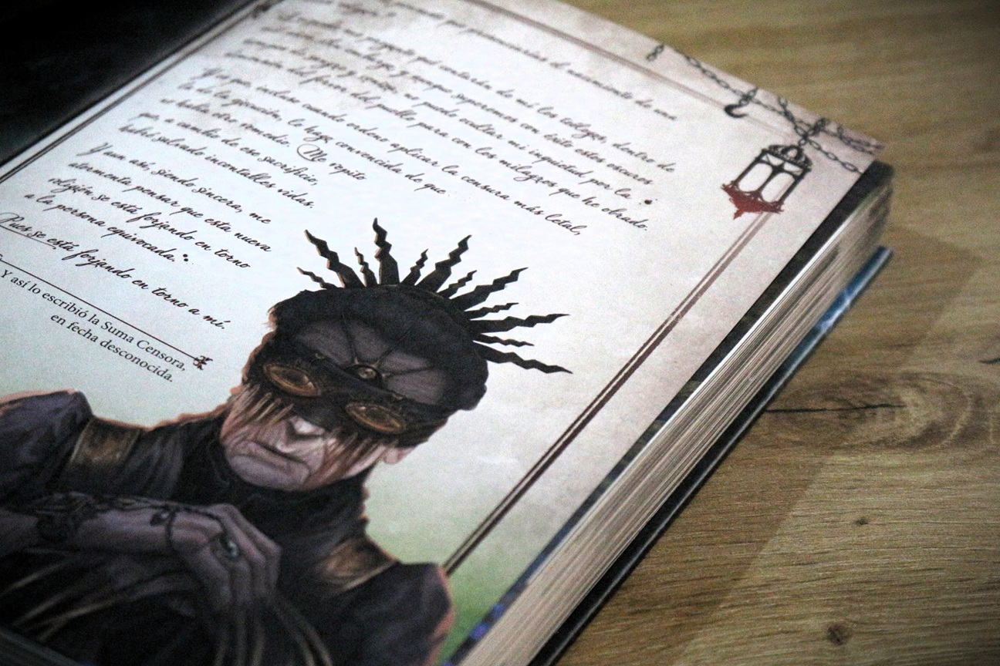
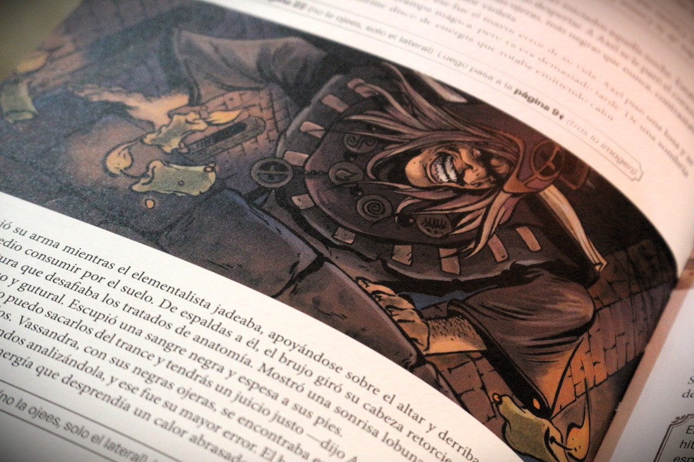
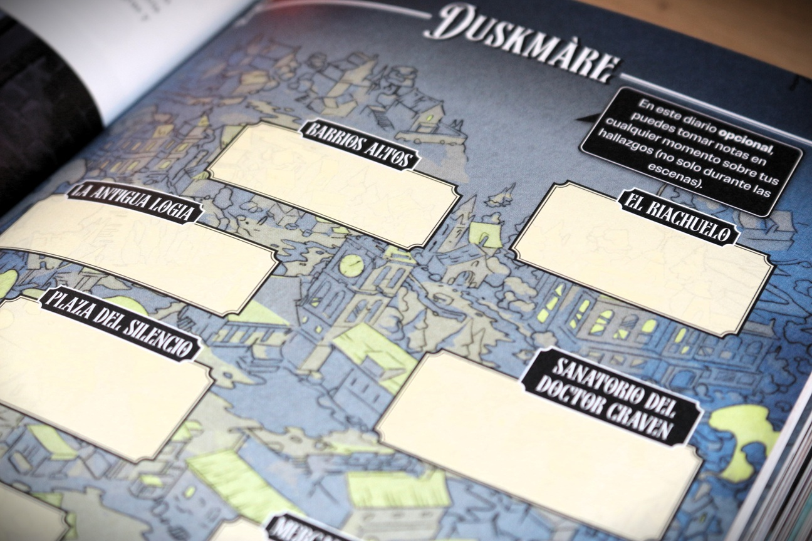
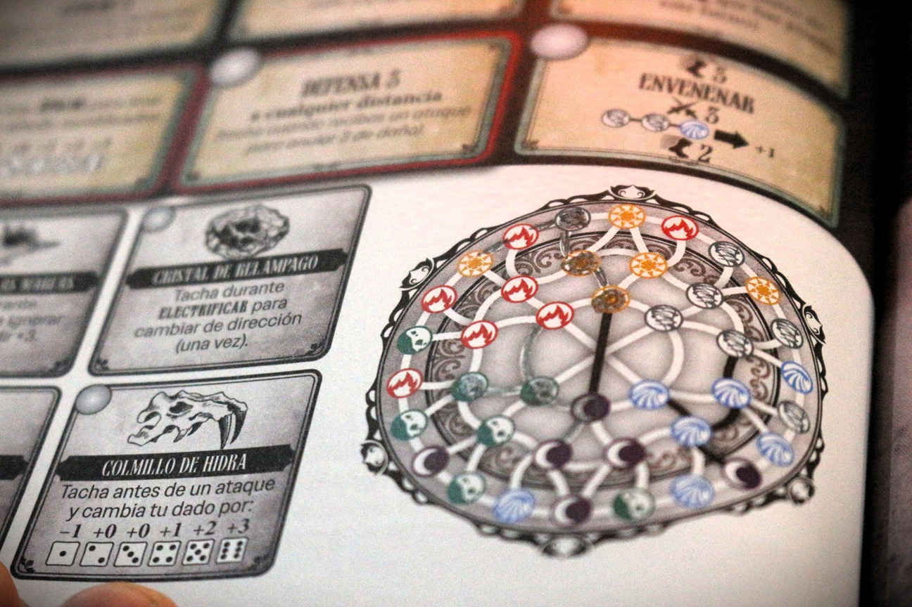
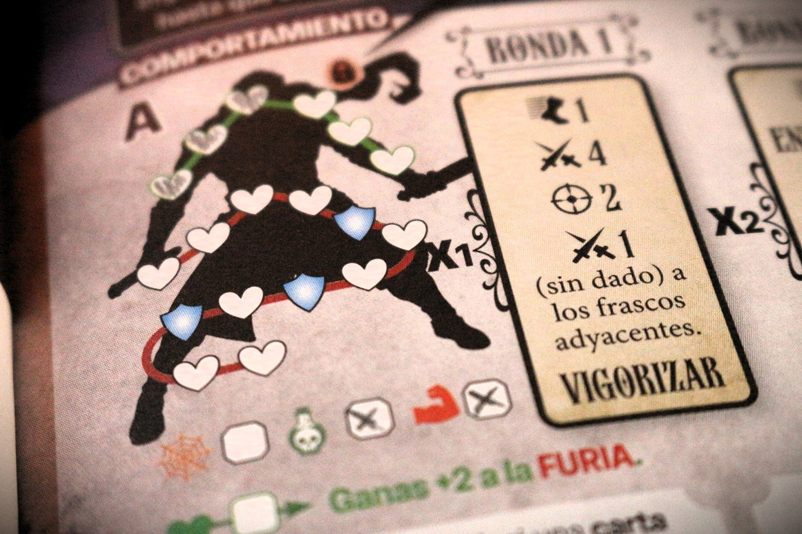

Un juego de Pablo Aguilera
En el Abismo
Una aventura de acción táctica, misterio y rol.
Dentro de un libro. Con un lápiz.
01 / El juego
La aventura está
en tus manos.

Un libro.
Un lápiz.
Otro mundo.
En el Abismo es una aventura independiente ambientada en el mundo de En las Cenizas. Explora, combate y toma decisiones dentro del propio libro.
Los dados están integrados en las páginas. Las marcas en el canto registran la evolución de tus personajes, sus objetos y sus características.
Acción táctica, misterio y rol, allí donde abras sus páginas.
02 / Al otro lado
Hay algo más
allá de la bruma.

Dos caminos.
Un descenso.
Axel es un inquisidor que persigue la hechicería. Vassandra, su hermana, posee el don del elementalismo y se dirige a la entrada del Abismo oculta en Duskmàre.
Sus caminos conducen a un lugar de horrores, maravillas y secretos. Las decisiones morales transforman a los personajes; sus trastornos pueden convertirse en aliados… si consiguen mantenerlos bajo control.
03 / Entre las páginas
Asómate
al Abismo.
Personajes, escenarios y mecanismos que esperan dentro del libro.










Pablo Aguilera · Devir